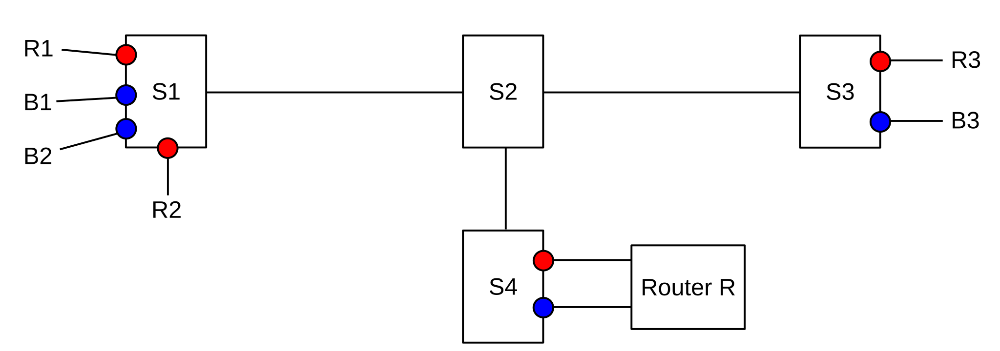
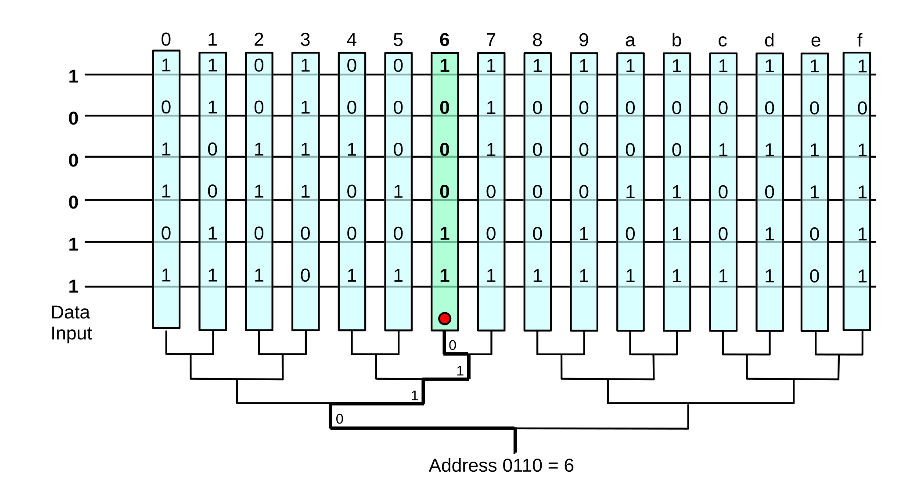
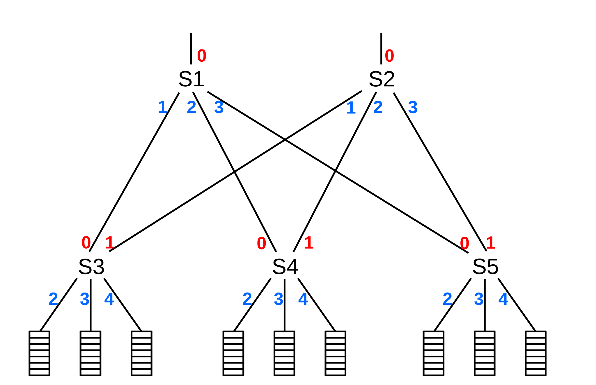

3 Advanced Ethernet¶
The previous chapter covered the basic mechanics of Ethernet, including switching and learning. In this chapter we examine more advanced features, typically encountered primarily in large-scale installations:
- The spanning-tree algorithm
- Virtual LANs
- Ethernet switch hardware
- TRILL and SPB
- Software defined networking and OpenFlow
The first of these is a way to tolerate loops in the underlying link topology. Loops have a way of sneaking into the cabling unintentionally, but also have the potential to provide much-needed redundancy. The spanning-tree algorithm achieves its goal by finding loops in the physical links and then defining a “logical” tree (loop-free) topology by pruning away the loops.
Virtual LANs, or VLANs, are a mechanism by which disjoint subsets of the hosts on a large Ethernet can be sequestered from one another, with packet exchanges only under controllable conditions. For example, Sales and Engineering workstations can be physically commingled, but kept logically separate.
TRILL and SPB bring to Ethernet the active embrace of loops, with traffic intentionally routed along one of multiple paths to a destination (typically the shortest path). Multiple paths allow for redundancy, an important consideration in the event of link failure.
Software-defined networking, or SDN, represents the most radical step here. Ethernet forwarding is placed under the control of a program, rather than under control of the learning algorithm of 2.4.1 Ethernet Learning Algorithm. At a minimum, this allows much more strategic handling of loops in the topology. SDN does not stop there, however, and also enables many other strategies to design and control large and complex networks.
3.1 Spanning Tree Algorithm and Redundancy¶
In theory, if you form a loop with Ethernet switches, any packet with destination not already present in the forwarding tables will circulate endlessly, consuming most available throughput. Some early switches would actually do this; it was generally regarded as catastrophic failure.
In practice, however, loops allow redundancy – if one link breaks there is still 100% connectivity – and so can be desirable. As a result, Ethernet switches have incorporated a switch-to-switch protocol to construct a subset of the switch-connections graph that has no loops and yet allows reachability of every host, known in graph theory as a spanning tree. Once the spanning tree is built, links that are not part of the tree are disabled, even if they would represent the most efficient path between two nodes. If a link that is part of the spanning tree fails, partitioning the network, a new tree is constructed, and some formerly disabled links may now return to service.
One might ask, if switches can work together to negotiate a a spanning tree, whether they can also work together to negotiate loop-free forwarding tables for the original non-tree topology, thus keeping all links active. The difficulty here is not the switches’ ability to coordinate, but the underlying Ethernet broadcast feature. As long as the topology has loops and broadcast is enabled, broadcast packets might circulate forever. And disabling broadcast is not a straightforward option; switches rely on the broadcast-based fallback-to-flooding strategy of 2.4.1 Ethernet Learning Algorithm to deliver to unknown destinations. However, we will return to this point in 3.4 Software-Defined Networking. See also exercise 4.0.
The presence of hubs and other unswitched Ethernet segments slightly complicates the switch-connections graph. In the absence of these, the graph’s nodes and edges are simply the hosts (including switches) and links of the Ethernet itself. If unswitched multi-host Ethernet segments are present, then each of these becomes a single node in the graph, with a graph edge to each switch to which it directly connects. (Any Ethernet switches not participating in the spanning-tree algorithm would be treated as hubs.)
Every switch has an ID, eg its smallest Ethernet address, and every edge that attaches to a switch does so via a particular, numbered interface. The goal is to disable redundant (cyclical) paths while retaining the ability to deliver to any segment. The algorithm is due to Radia Perlman, [RP85].
The switches first elect a root node, eg the one with the smallest ID. Then, if a given segment connects to two switches that both connect to the root node, the switch with the shorter path to the root is used, if possible; in the event of ties, the switch with the smaller ID is used. The simplest measure of path cost is the number of hops, though current implementations generally use a cost factor inversely proportional to the bandwidth (so larger bandwidth has lower cost). Some switches permit other configuration here. The process is dynamic, so if an outage occurs then the spanning tree is recomputed. If the outage should partition the network into two pieces, both pieces will build spanning trees.
All switches send out regular messages on all interfaces called bridge protocol data units, or BPDUs (or “Hello” messages). These are sent to the Ethernet multicast address 01:80:c2:00:00:00, from the Ethernet physical address of the interface. (Note that Ethernet switches do not otherwise need a unique physical address for each interface.) The BPDUs contain
- The switch ID
- the ID of the node the switch believes is the root
- the path cost (eg number of hops) to that root
These messages are recognized by switches and are not forwarded naively. Switches process each message, looking for
- a switch with a lower ID than any the receiving switch has seen before (thus becoming the new root)
- a shorter path to the existing root
- an equal-length path to the existing root, but via a neighbor switch with a lower ID (the tie-breaker rule). If there are two ports that connect to that switch, the port number is used as an additional tie-breaker.
In a heterogeneous Ethernet we would also introduce a preference for faster paths, but we will assume here that all links have the same bandwidth.
When a switch sees a new root candidate, it sends BPDUs on all interfaces, indicating the distance. The switch includes the interface leading towards the root.
Once this process has stabilized, each switch knows
- its own path to the root
- which of its ports any further-out switches will be using to reach the root
- for each port, its directly connected neighboring switches
Now the switch can “prune” some (or all!) of its interfaces. It disables all interfaces that are not enabled by the following rules:
- It enables the port via which it reaches the root
- It enables any of its ports that further-out switches use to reach the root
- If a remaining port connects to a segment to which other “segment-neighbor” switches connect as well, the port is enabled if the switch has the minimum cost to the root among those segment-neighbors, or, if a tie, the smallest ID among those neighbors, or, if two ports are tied, the port with the smaller ID.
- If a port has no directly connected switch-neighbors, it presumably connects to a host or segment, and the port is enabled.
Rules 1 and 2 construct the spanning tree; if S3 reaches the root via S2, then Rule 1 makes sure S3’s port towards S2 is open, and Rule 2 makes sure S2’s corresponding port towards S3 is open. Rule 3 ensures that each network segment that connects to multiple switches gets a unique path to the root: if S2 and S3 are segment-neighbors each connected to segment N, then S2 enables its port to N and S3 does not (because 2<3). The primary concern here is to create a path for any host nodes on segment N; S2 and S3 will create their own paths via Rules 1 and 2. Rule 4 ensures that any “stub” segments retain connectivity; these would include all hosts directly connected to switch ports.
3.1.1 Spanning Tree Example 1: Switches Only¶
We can simplify the situation somewhat if we assume that the network is fully switched: each switch port connects to another switch or to a (single-interface) host; that is, no repeater hubs (or coax segments!) are in use. In this case we can dispense with Rule 3 entirely.
Any switch ports directly connected to a host can be identified because they are “silent”; the switch never receives any BPDU messages on these interfaces because hosts do not send these. All these host port ends up enabled via Rule 4. Here is our sample network, where the switch numbers (eg 5 for S5) represent their IDs; no hosts are shown and interface numbers are omitted.
S1 has the lowest ID, and so becomes the root. S2 and S4 are directly connected, so they will enable the interfaces by which they reach S1 (Rule 1) while S1 will enable its interfaces by which S2 and S4 reach it (Rule 2).
S3 has a unique lowest-cost route to S1, and so again by Rule 1 it will enable its interface to S2, while by Rule 2 S2 will enable its interface to S3.
S5 has two choices; it hears of equal-cost paths to the root from both S2 and S4. It picks the lower-numbered neighbor S2; the interface to S4 will never be enabled. Similarly, S4 will never enable its interface to S5.
Similarly, S6 has two choices; it selects S3.
After these links are enabled (strictly speaking it is interfaces that are enabled, not links, but in all cases here either both interfaces of a link will be enabled or neither), the network in effect becomes:
3.1.2 Spanning Tree Example 2: Switches and Segments¶
As an example involving switches that may join via unswitched Ethernet segments, consider the following network; S1, S2 and S3, for example, are all segment-neighbors via their common segment B. As before, the switch numbers represent their IDs. The letters in the clouds represent network segments; these clouds may include multiple hosts. Note that switches have no way to detect these hosts; only (as above) other switches.
Fig. 15: Switched Ethernet with potentially multiple hosts connected to switch ports
Eventually, all switches discover S1 is the root (because 1 is the smallest of {1,2,3,4,5,6}). S2, S3 and S4 are one (unique) hop away; S5, S6 and S7 are two hops away.
For the switches one hop from the root, Rule 1 enables S2’s port 1, S3’s port 1, and S4’s port 1. Rule 2 enables the corresponding ports on S1: ports 1, 5 and 4 respectively. Without the spanning-tree algorithm S2 could reach S1 via port 2 as well as port 1, but port 1 has a smaller number.
S5 has two equal-cost paths to the root: S5⟶S4⟶S1 and S5⟶S3⟶S1. S3 is the switch with the lower ID; its port 2 is enabled and S5 port 2 is enabled.
S6 and S7 reach the root through S2 and S3 respectively; we enable S6 port 1, S2 port 3, S7 port 2 and S3 port 3.
The ports still disabled at this point are S1 ports 2 and 3, S2 port 2, S4 ports 2 and 3, S5 port 1, S6 port 2 and S7 port 1.
Now we get to Rule 3, dealing with how segments (and thus their hosts) connect to the root. Applying Rule 3,
- We do not enable S2 port 2, because the network (B) has a direct connection to the root, S1
- We do enable S4 port 3, because S4 and S5 connect that way and S4 is closer to the root. This enables connectivity of network D. We do not enable S5 port 1.
- S6 and S7 are tied for the path-length to the root. But S6 has smaller ID, so it enables port 2. S7’s port 1 is not enabled.
Finally, Rule 4 enables S4 port 2, and thus connectivity for host J. It also enables S1 port 2; network F has two connections to S1 and port 2 is the lower-numbered connection. At this point the disabled ports are S1 port 3, S2 port 2, S5 port 1 and S7 port 1.
All this port-enabling is done using only the data collected during the root-discovery phase; there is no additional negotiation. The BPDU exchanges continue, however, so as to detect any changes in the topology.
If a link is disabled, it is not used even in cases where it would be more efficient to use it. That is, traffic from D to E is sent via S4, S1 and S3, with respective arrival ports 3, 4 and 1; it does not pass through S5. IP routing, on the other hand, uses the “shortest path”. To put it another way, all spanning-tree Ethernet traffic goes through the root node, or along a path to or from the root node.
The traditional (IEEE 802.1D) spanning-tree protocol is relatively slow; the need to go through the tree-building phase means that after switches are first turned on no normal traffic can be forwarded for ~30 seconds. Faster, revised protocols have been proposed to reduce this problem.
Another issue with the spanning-tree algorithm is that a rogue switch can announce an ID of 0 (or some similar artificially small value), thus likely becoming the new root; this leaves that switch well-positioned to eavesdrop on a considerable fraction of the traffic. One of the goals of the Cisco “Root Guard” feature is to prevent this. Another goal of this and related features is to put the spanning-tree topology under some degree of administrative control. One likely wants the root switch, for example, to be geographically at least somewhat centered, and for the high-speed backbone links to be preferred to slow links.
3.2 Virtual LAN (VLAN)¶
What do you do when you have different people in different places who are “logically” tied together? For example, for a while the Loyola University CS department was split, due to construction, between two buildings.
One approach is to continue to keep LANs local, and use IP routing between different subnets. However, it is often convenient (printers are one reason) to configure workgroups onto a single “virtual” LAN, or VLAN. A VLAN looks like a single LAN, usually a single Ethernet LAN, in that all VLAN members will see broadcast packets sent by other members and the VLAN will ultimately be considered to be a single IP subnet (9.6 IPv4 Subnets). Different VLANs are ultimately connected together, but likely only by passing through a single, central IP router. Broadcast traffic on one VLAN will generally not propagate to any other VLAN; this isolation of broadcast traffic is another important justification for VLAN use.
While there are exceptions, a common rule of thumb is that any one VLAN should have no more than 256 hosts, the size of a /24 IPv4 subnet.
VLANs can be visualized and designed by using the concept of coloring. We logically assign all nodes on the same VLAN the same color, and switches forward packets accordingly. That is, if S1 connects to red machines R1 and R2 and blue machines B1 and B2, and R1 sends a broadcast packet, then it goes to R2 but not to B1 or B2. Switches must, of course, be told the color of each of their ports.

Fig. 16: One network of switches S1-S4 divided into two VLANs, red and blue
In the diagram above, S1 and S3 each have both red and blue ports. The switch network S1-S4 will deliver traffic only when the source and destination ports are the same color. Red packets can be forwarded to the blue VLAN only by passing through the router R, entering R’s red port and leaving its blue port. R may apply firewall rules to restrict red–blue traffic.
When the source and destination ports are on the same switch, nothing needs to be added to the packet; the switch can keep track of the color of each of its ports. However, switch-to-switch traffic must be additionally tagged to indicate the source. Consider, for example, switch S1 above sending packets to S3 which has nodes R3 (red) and B3 (blue). Traffic between S1 and S3 must be tagged with the color, so that S3 will know to what ports it may be delivered. The IEEE 802.1Q protocol is typically used for this packet-tagging; a 32-bit field, including a 12-bit “color” tag, is inserted into the Ethernet header after the source address and before the type field. The first 16 bits of this field is 0x8100, which becomes the new Ethernet type field and which identifies the frame as tagged. A separate 802.3 amendment allows Ethernet packets to be slightly larger, to accommodate the tags.
Double-tagging is possible; this would allow an ISP to have one level of tagging and its customers to have another level.
The 802.1Q header also supports a three-bit priority field. Packets are forwarded by cooperating switches using priority queuing (23.3 Priority Queuing) based on this field, though even in many relatively large installations all packets are assigned the same – default – priority. One example of the use of this field would be to give voice packets higher priority than data packets. Another example would be to map the IP header priority field (eg the IPv4 DS field, 9.1 The IPv4 Header) to the 802.1Q priority. This would normally be useful only within an ISP’s Ethernet-based network, or within a data center. For a more dynamic example, see 16.5.6 Homa.
Linux supports basic configuration of VLAN-connected interfaces through the vconfig command. This allows a given Ethernet interface to support one or more VLAN tags through the creation of separate virtual interfaces for each tag. It also allows for the assignment of a 802.1Q priority value to be used for a given VLAN. Often, though, VLANs are meant to be transparent to host devices.
Finally, most commercial-grade switches do provide some way of selectively allowing traffic between different VLANs; with such switches, for example, rules could be created to allow R1 to connect to B3 without the use of the router R. One difficulty with this approach is the lack of standardization between switch manufacturers. This makes it difficult to create, for example, authorization applications that allow opening inter-VLAN connections on the fly. Another issue is that some switches allow inter-VLAN rules based only on MAC addresses, and not, for example, on TCP port numbers. The OpenFlow protocol (3.4.1 OpenFlow Switches) has the potential to create the necessary standardization here. Even without OpenFlow, however, some specialty access-and-authentication systems have been developed that do enable host access by dynamic creation of the appropriate switch rules.
3.2.1 Switch Hardware¶
One of the differences between an inexpensive Ethernet switch and a pricier one is the degree of internal parallelism it can support. If three packets arrive simultaneously on ports 1, 2 and 3, and are destined for respective ports 4, 5 and 6, can the switch actually transmit the packets simultaneously? A “yes” answer here is the gold performance standard for an Ethernet switch: to keep up with packets as fast as they arrive.
The worst-case load, for a switch with 2N ports, is for packets to arrive continuously on N ports, and depart on a different N ports. This means that, in the time required to transmit one packet, the switch must internally forward N packets in parallel.
This is sometimes much faster than necessary. If all the load is departing (or arriving) via just one of the ports – for example, the port connected to the server, or to the Internet – then the above standard is N times faster than necessary; the switch need only handle one packet at a time. Such a switch may be forced to queue outbound packets on that one port, but that does not represent a lack of performance on the part of the switch. Still, greater parallelism is generally viewed as a good thing in switches.
The simplest switch architecture – used whenever a switch is built around a “standard” computer – is the shared-memory model. Such a system consists of a single CPU, single memory and peripheral busses, and multiple Ethernet cards. When a packet arrives, the CPU must copy the packet from the arrival interface into RAM, determine the forwarding, and then copy the packet to the output interface. To keep up with one-at-a-time 100 Mbps transmission, the internal transfer rate must therefore be at least 200 Mbps.
The maximum speed of such a device depends largely on the speed of the peripheral-to-RAM bus (the so-called front-side bus). The USB 3.0 bus operates at 5 Gbps. At an Ethernet speed of 100 Mbps, such a bus can theoretically transfer 5 Gbps/200 Mbps = 25 packets in and out in the time it takes one packet to arrive, supporting up to 50 ports total. However, with gigabit Ethernet, only two packets can be handled. For commodity five-port switches, this is enough, and such switches can generally handle this degree of parallelism.
Bus speeds go up at least ten-fold, but 10 Gbps and even 40 Gbps Ethernet is now common in datacenters, and 24 ports is a bare minimum. As a result, the shared-memory architecture is generally not regarded as adequate for high-performance switches. When a high degree of parallelism is required, there are various architectures – known as switch fabrics – that can be implemented.
One common solution to this internal-bottleneck problem is a so-called crossbar switch fabric, consisting of a grid of N×N normally open switch nodes that can be closed under CPU control. Packets travel, via a connected path through the crossbar, directly from one Ethernet interface to another. The crossbar allows parallel connections between any of N inputs and any of N outputs.
Fig. 17: 5×5 crossbar with 5 parallel connections 1→1, 2→3, 3→5, 4→2, 5→4
The diagram above illustrates a 5×5 crossbar, with 5 inputs and 5 separate outputs. (In a real Ethernet switch, any port can be an input or an output, but this is a relatively inessential difference). There are 5 parallel connections shown, from inputs 1-5 to outputs 1,3,5, 2 and 4 respectively; the large dots represent solid-state switching elements in the closed state. Packets are transmitted serially through each switch path.
We saw in 1.7 Congestion that, for any switch (or router), if packets arrive over time for a given output port faster than they can be transmitted by that port, then the excess packets will need to be queued at that output port. However, in this crossbar example, if multiple packets destined for the same output arrive simultaneously, all but one will also have to be queued briefly at the input side: packets cannot be delivered in parallel to the same output-port queue. The same is true for most other switch fabrics as well, including the simple shared-memory switch discussed above. So, while the “primary” queues of switches (and routers) are at the output side, as packets wait their turn for transmission, there is also a need for smaller input-side queues, as packets wait their turn to enter the switch fabric.
Crossbars, and variations, are one common approach in the design of high-speed switches that support multiple parallel transfers.
The other hardware innovation often used by high-performance switches is Content-Addressable Memory, or CAM; this allows for the search of the forwarding table in a single memory load. In a shared-memory switch, each destination address must be looked up in a hash table or other data structure; including the calculation of the hash value, this process may take as long as several tens of memory loads.
On some brands of switches, the forwarding table is often referred to as the CAM table.
CAM memory consists of a large number N of memory registers all attached to a common data-input bus; for Ethernet switching, the data width of the bus and registers needs to be at least as large as the 48-bit address size. When the input bus is activated, each memory register simultaneously compares the value on the bus with its own data value; if there is a match, the register triggers its output line. A binary-encoder circuit then converts the number k<N of that register to a binary value representing the address k of the register. It is straightforward to have the encoder resolve ties by choosing, for example, the number of the first register to match.

Fig. 18: Content-Addressable Memory
In the diagram above, the data width is 6, and there are 16 vertically oriented registers numbered (in hex) 0-f. Register 6 contains the entry 100011 matching the data input, and enables its signal into the encoder. The output of the encoder is the corresponding address, 0110.
A common variant of CAM is Ternary CAM, or TCAM, in which each memory register is paired with a corresponding “mask” register. For any given bit, a match is declared only if the bus bit matches the register bit, or the corresponding mask bit is 0. A mask bit of 0 thus represents a wildcard value, matching any input. TCAM is most useful when the addresses being looked up are IP addresses rather than Ethernet addresses, in which case the goal is to match only the address bits corresponding to the network prefix (1.10 IP - Internet Protocol). In this setting the mask contents represents the IP address mask (9.6 IPv4 Subnets). In order to implement the longest-match rule (14.1 Classless Internet Domain Routing: CIDR) it is essential that addresses with shorter prefixes – longer runs of terminal wildcard bits – appear before addresses with longer prefixes (and also that, in the event of multiple matches, the encoder prefers the righthand – that is, longer – match). This implies that new TCAM entries must be inserted in relatively specific positions, which may involve a significant amount of shifting the positions of existing entries. See 9.5.1 Efficient Forwarding-Table Lookup.
3.3 TRILL and SPB¶
As Ethernets get larger, the spanning-tree algorithm becomes more and more a problem, primarily because useful links are disabled and redundancy is lost. In a high-performance network, such as a campus backbone or within a datacenter, disabled links are a wasted resource. A secondary issue is that, in the event of link failure, the spanning-tree approach can take many seconds to create a new tree and restore connectivity.
To address these problems, there are now protocols which allow Ethernet to have active loops in the topology, making first-class use of all links. The idea is to generate forwarding tables within the Ethernet switches – or at least within those that support the appropriate protocol – that route every packet along the shortest path, or at least an approximation to the shortest path. All physical links can remain in active service. This has long been a staple in the IP world (13 Routing-Update Algorithms), but is definitely a break with tradition at the LAN layer.
There are two competing protocols here: TRILL (TRansparent Interconnection of Lots of Links) and SPB (Shortest-Path Bridging). TRILL is documented in [RP04] and RFC 6325 and companions, while SPB is standardized by IEEE 802.1aq. We will focus here on TRILL (though we do note that link-layer protocols are normally the province of the IEEE, not the IETF).
Both TRILL and SPB envision that, initially, only a few switches will be smart enough to do shortest-path routing, just as, once upon a time, only a few switches implemented the spanning-tree algorithm. But, with time, it is likely that eventually most if not all Ethernet switches will be shortest-path aware. In high-performance datacenters it is particularly likely that forwarding will be based on TRILL or SPB.
In TRILL, the Ethernet switches that are TRILL-aware are known as Router-Bridges, or RBridges (the terms RSwitches and TRILL Switches might also be appropriate). In between the RBridges are Legacy Ethernets (called “links” in [RP04] and RFC 6325, though this term is misleading); Legacy Ethernets consist of maximal subnetworks of Ethernet hosts and non-TRILL-aware switches. The intent is for the RBridges to partition the entire Ethernet into relatively small Legacy Ethernets. In the ultimate case where all switches are RBridges, the Legacy Ethernets are simply individual hosts. In the diagram below, four RBridges isolate Legacy Ethernets 1, 2, 3 and 4, though Legacy Ethernet 5 represents a degree of partitioning inefficiency.
Fig. 19: TRILL network with RBridges RB1-RB4 and Legacy Ethernets LE1-LE5
Each Legacy Ethernet elects a single connected RBridge to represent it. There is a unique choice for LE1 through LE4 above, but LE5 must make a decision. This elected RBridge is known as the Designated RBridge, or DRB. Each Legacy Ethernet then builds its own spanning tree, perhaps (though not necessarily) rooted at its Designated RBridge.
Traffic from a Legacy Ethernet to the outside will generally be forwarded through its Designated RBridge; connections to other RBridges will not be used. The idea is for packets from one Legacy Ethernet to another to be delivered first to the source node’s DRB, and then to the destination node’s DRB via true shortest-path forwarding between the RBridges, and from there to the destination node. Of course, in the ultimate case where every switch is an RBridge, traffic will take the shortest path from start to finish.
The one exception to this rule about forwarding through the Designated RBridge is that the DRB can delegate this forwarding task to other RBridges for different VLANs within the Legacy Ethernet. If this is done, each VLAN will always use the same RBridge for all its outside traffic.
The second part of the process is for the RBridges each to figure out the overall topology; that is, each builds a complete map of all the RBridges and their interconnections. This is done using a link-state routing-update protocol, described in 13.5 Link-State Routing-Update Algorithm. Of the two primary link-state protocols, IS-IS and OSPF, TRILL has selected the former, as it is more easily adapted to a setting in which, as here, nodes do not necessarily have IP addresses. The RBridges each send out appropriate “link-state packets”, using multicast and using per-RBridge databases to ensure that these packets are not re-forwarded endlessly. These link-state packets can be compared to spanning-tree Hello messages. As is fundamental to link-state forwarding, once each RBridge has a complete map of all the RBridges, each RBridge can calculate an optimal route to any other RBridge.
As Designated RBridges see packets from their Legacy Ethernets, they learn the MAC addresses of the active hosts within, via the usual Ethernet learning protocol. They then share these addresses with other RBridges, using the IS-IS link-state protocol, so other RBridges eventually learn how to reach most if not all Ethernet addresses present in the overall network.
TRILL still must make use of fallback-to-flooding, however, when delivering to previously unknown destinations. To this end, the RBridges negotiate among themselves a spanning tree covering all the RBridges. Any packet with unknown destination is flooded along this RBridge spanning tree, and then, as the packet reaches each Designated RBridge for a Legacy Ethernet, is flooded along the spanning tree of that Ethernet. This process is also used for delivery of broadcast and multicast packets.
As RBridges talk to one another, they negotiate compact two-byte addresses – known as “nicknames” – for one another, versus the standard Ethernet six-byte addresses. This saves space in the RBridge-to-RBridge communications.
As packets travel between RBridges, a special TRILL header is added. This header includes a hopcount field, otherwise not present in Ethernet, which means any packets caught in transient routing loops will eventually be discarded. IS-IS may occasionally generate such routing loops, though they are rare.
The TRILL header also includes the nicknames of the source and destination RBridges. This means that actual packet forwarding between RBridges does not involve the MAC address of the destination host; that is used only after the packet has reached the Designated RBridge for the destination Legacy Ethernet, at which point the TRILL header is removed.
If a link between two RBridges fails, then the link’s endpoints send out IS-IS update messages to notify all the other RBridges of the failure. The other RBridges can then recalculate their forwarding tables so as not to use the broken link. Recovery time is typically under 0.1 seconds, a roughly hundredfold improvement over spanning-tree recovery times.
TRILL supports the use of multiple equal-cost paths to improve throughput between two RBridges; cf 13.7 ECMP. In a high-performance datacenter, this feature is very important.
Like TRILL, SPB uses IS-IS between the SPB-aware bridges to find shortest paths, and encapsulates packets with a special header as they travel between RBridges. SPB does not include a hopcount in the encapsulation header; instead, it more carefully controls forwarding. SPB also uses the original destination MAC address for inter-RBridge forwarding.
3.4 Software-Defined Networking¶
While TRILL and SPB offer one way to handle to the scaling problems of spanning trees, Software-Defined Networking, or SDN, offers another, much more general, approach. The core idea of SDN is to place the forwarding mechanism of each participating switch under the aegis of a controller, a user-programmable device that is capable of giving each switch instructions on how to forward packets. Like TRILL and SPB, this approach also allows forwarding and redundant links to coexist. The controller can be a single node on the network, or can be a distributed set of nodes. The controller manages the forwarding tables of each of the switches.
To handle legitimate broadcast traffic, the controller can, at startup, probe the switches to determine their layout, and, from this, construct a suitable spanning tree. The switches can then be instructed to flood broadcast traffic only along the links of this spanning tree. Links that are not part of the spanning tree can still be used for forwarding to known destinations, however, unlike conventional switches using the spanning tree algorithm.
Typically, if a switch sees a packet addressed to an unknown destination, it reports it to the controller, which then must figure out what to do next. One option is to have traffic to unknown destinations flooded along the same spanning tree used for broadcast traffic. This allows fallback-to-flooding to coexist safely with the full use of loop topologies.
Switches are often configured to report new source addresses to the controller, so that the controller can tell all the other switches the best route to that new source.
SDN controllers can be configured as simple firewalls, disallowing forwarding between selected pairs of nodes for security reasons. For example, if a datacenter has customers A and B, each with multiple nodes, then it is possible to configure the network so that no node belonging to customer A can send packets to a node belonging to customer B. See also the following section.
At many sites, the SDN implementation is based on standardized modules. However, controller software can also be developed locally, allowing very precise control of network functionality. This control, rather than the ability to combine loop topologies with Ethernet, is arguably SDN’s most important feature. See [FRZ13].
3.4.1 OpenFlow Switches¶
At the heart of SDN is the ability of controllers to tell switches how to forward packets. We next look at the packet-forwarding architecture for OpenFlow switches; OpenFlow is a specific SDN standard created by the Open Networking Foundation. See [MABPPRST08] and the OpenFlow switch specification (2015 version).
OpenFlow forwarding is built around one or more flow tables. The primary components of a flow-table entry are a set of match fields and a set of packet-response instructions, or actions, if the match succeeds. Some common actions include
- dropping the packet
- forwarding the packet out a specified single interface
- flooding the packet out a set of interfaces
- forwarding the packet to the controller
- modifying some field of the packet
- processing the packet at another (higher-numbered) flow table
The match fields can, of course, be a single entry for the destination Ethernet address. But it can also include any other packet bit-field, and can include the ingress interface number. For example, the forwarding can be done entirely (or partially) on IP addresses rather than Ethernet addresses, thus allowing the OpenFlow switch to act as a so-called Layer 3 switch (9.6.3 Subnets versus Switching), that is, resembling an IP router. Matching can be by the destination IP address and the destination TCP port, allowing separate forwarding for different TCP-based applications. In 13.6 Routing on Other Attributes we define policy-based routing; arbitrary such routing decisions can be implemented using OpenFlow switches. In SDN settings the policy-based-routing abilities are sometimes used to segregate real-time traffic and large-volume “elephant” flows. In the l2_pairs.py example of the following section, matching is done on both Ethernet source and destination addresses.
Flow tables bear a rough similarity to forwarding tables, with the match fields corresponding to destinations and the actions corresponding to the next_hop. In simple cases, the match field contains a single destination address and the action is to forward out the corresponding switch port.
Normally, OpenFlow switches handle broadcast packets by flooding them; that is, by forwarding them out all interfaces other than the arrival interface. It is possible, however, to set the NO_FLOOD attribute on specific interfaces, which means that packets designated for flooding (broadcast or otherwise) will not be sent out on those interfaces. This is typically how spanning trees for broadcast traffic are implemented (see 30.9.6 l2_multi.py for a Mininet example). An interface marked NO_FLOOD, however, may still be used for unicast traffic. Generally, broadcast flooding does not require a flow-table entry.
Match fields are also assigned a priority value. In the event that a packet matches two or more flow-table entries, the entry with the highest priority wins. The table-miss entry is the entry with no match fields (thereby matching every packet) and with priority 0. Often the table-miss entry’s action is to forward the packet to the controller, although a packet that matches no entry is simply dropped.
Flow-table instructions can also involve modifying (“mangling”) packets. One Ethernet-layer application might be VLAN coloring (3.2 Virtual LAN (VLAN)); at the IPv4 layer, this could be used to decrement the TTL and update the checksum (9.1 The IPv4 Header).
In addition to match fields and instructions, flow tables also include counters, flags, and a last_used time. The latter allows flows to be removed if no matching packets have been seen for a while. The counters allow the OpenFlow switch to implement Quality-of-Service constraints – eg bandwidth limiting – on the traffic.
3.4.2 Learning Switches in OpenFlow¶
Suppose we want to implement a standard Ethernet learning switch (2.4.1 Ethernet Learning Algorithm). The obvious approach is to use flows matching only on the destination address. But we encounter a problem because, by default, packets are reported to the controller only when there is no flow-entry match. Suppose switch S sees a packet from host B to host A and reports it to the controller, which installs a flow entry in S matching destination B (much as a real learning switch would do). If a packet now arrives at S from a third host C to B, it would simply be forwarded, as it would match the B flow entry, and therefore would not be reported to the controller. This means the controller would never learn about address C, and would never install a flow entry for C.
One straightforward alternative approach that avoids this problem is to match on Ethernet ⟨destaddr,srcaddr⟩ pairs. If a packet from A to B arrives at switch S and does not match any existing flow entry at S, it is reported to the controller, which now learns that A is reached via the port by which the packet arrived at S.
In the network above, suppose A sends a packet to B (or broadcasts a packet meant for B), and the flow table of S is empty. S will report the packet to the controller (not shown in the diagram), which will send it back to S to be flooded. However, the controller will also record that A can be reached from S via port 1.
Next, suppose B responds. When this packet from B arrives at S, there are still no flow-table entries, and so S again reports the packet to the controller. But this time the controller knows, because it learned from the first packet, that S can reach A via port 1. The controller also now knows, from the just-arrived packet, that B can be reached via port 2. Knowing both of these forwarding rules, the controller now installs two flow-table entries in S:
dst=B,src=A: forward out port 2dst=A,src=B: forward out port 1
If a packet from a third host C now arrives at S, addressed to B, it will not be forwarded, even though its destination address matches the first rule above, as its source address does not match A. It will instead be sent to the controller (and ultimately be flooded). When B responds to C, the controller will install rules for dst=C,src=B and dst=B,src=C. If the packet from C were not reported to the controller – perhaps because S had a flow rule for dst=B only – then the controller would never learn about C, and would never be in a position to install a flow rule for reaching C.
The pairs approach to OpenFlow learning is pretty much optimal, if a single flow-entry table is available. The problem with this approach is that it does not scale well; with 10,000 addresses on the network, we will need 100,000,000 flowtable-entry pairs to describe all the possible forwarding. This is prohibitive.
We examine a real implementation (in Python) of the pairs approach in 30.9.2 l2_pairs.py, using the Mininet network emulator and the Pox controller (30 Mininet).
A more compact approach is to use multiple flow tables: one for matching the destination, and one for matching the source. In this version, the controller never has to remember partial forwarding information, as the controller in the version above had to do after receiving the first packet from A. When a packet arrives, it is matched against the first table, and any actions specified by the match are carried out. One of the actions may be a request to repeat the match against the second table, which may lead to a second set of actions. We repeat the A→B, B→A example above, letting T0 denote the first table and T1 denote the second.
Initially, before any packets are seen, the controller installs the following low-priority match rules in S:
T0: match nothing: flood, send to T1T1: match nothing: send to controller
These are in effect default rules: because there are no packet fields to match, they match all packets. The low priority ensures that better-matching rules are always used when available.
When the packet from A to B arrives, the T0 rule above means the packet is flooded to B, while the T1 rule means the packet is sent to the controller. The controller then installs the following rules in S:
T0: match dst=A: forward via port 1, send to T1T1: match src=A: do nothing
Now B sends its reply to A. The first rule above matches, so the packet is forwarded by S to A, and is resubmitted to T1. The T1 rule immediately above, however, does not match. The only match is to the original default rule, and the packet is sent to the controller. The controller then installs another two rules in S:
T0: match dst=B: forward via port 2, send to T1T1: match src=B: do nothing
At this point, as A and B continue to communicate, the T0 rules ensure proper forwarding, while the T1 rules ensure that no more packets from this flow are sent to the controller.
Note that the controller always installs the same address in the T0 table and the T1 table, so the list of addresses present in these two tables will always be identical. The T0 table always matches destinations, though, while the T1 table matches source addresses.
The Mininet/Pox version of this appears in 30.9.3 l2_nx.py.
Another application for multiple flow tables involves switches that make quality-of-service prioritization decisions. A packet’s destination would be found using the first flow table, while its priority would be found by matching to the second table. The packet would then be forwarded out the port determined by the first table, using the priority determined by the second table. Like building a learning switch, this can be done with a single table by listing all combinations of ⟨destaddr,priority⟩, but sometimes that’s too many entries.
We mentioned above that SDN controllers can be used as firewalls. At the Ethernet-address level this is tedious to configure, but by taking advantage of OpenFlow’s understanding of IP addresses, it is straightforward, for example, to block traffic between different IP subnets, much like a router might do. OpenFlow also allows blocking all such traffic except that between specific pairs of hosts using specific protocols. For example, we might want customer A’s web servers to be able to communicate with A’s database servers using the standard TCP port, while still blocking all other web-to-database traffic.
3.4.3 Other OpenFlow examples¶
After emulating a learning switch, perhaps the next most straightforward OpenFlow application, conceptually, is the support of Ethernet topologies that contain loops. This can be done quite generically; the controller does not need any special awareness of the network topology.
On startup, switches are instructed by the controller to report their neighboring switches. With this information the controller is then able to form a complete map of the switch topology. (One way to implement this is for the controller to order each switch to send a special marked packet out each of its ports, and then for the receiving switches to report these packets back to the controller.) Once the controller knows the switch topology, it can calculate a spanning tree, and then instruct each switch that flooded packets should be sent out only via ports that correspond to links on the spanning tree.
Once the location of a destination host has been learned by the controller (that is, the controller learns which switch the host is directly connected to), the controller calculates the shortest (or lowest-cost, if the application supports differential link costs) path from each switch to that host. The controller then instructs each switch how to forward to that host. Forwarding will likely use links that are not part of the spanning tree, unlike traditional Ethernet switches.
We outline an implementation of this strategy in 30.9.6 l2_multi.py.
3.4.3.1 Interconnection Fabric¶
The previous Ethernet-loop example is quite general; it works for any switch topology. Many other OpenFlow applications require that the controller contains some prior knowledge of the switch topology. As an example of this, we present what we will refer to as an interconnection fabric. This is the S1-S5 network illustrated below, in which every upper (S1-S2) switch connects directly to every lower (S3-S5) switch. The bottom row in the diagram represents server racks, as interconnection fabrics in some form or other are very common in datacenters. (For a real-world datacenter example, see this Facebook example, although the Facebook example is connected using routing rather than switching with SDN (see 15.9 BGP for Interior Routing). Facebook refers to their upper-level fabric as a spine plane.) The red and blue numbers in the diagram below identify the switch ports.

The first two rows here contain many loops, eg S1–S3–S2–S4–S1 (omitting the S3-S5 row, and having S1 and S2 connect directly to the server racks, does not eliminate loops). In the previous example we described how we could handle loops in a switched network by computing a spanning tree and then allowing packet flooding only along this spanning tree. This is certainly possible here, but if we allow the spanning-tree algorithm to prune the loops, we will lose most of the parallelism between the S1-S2 and S3-S5 layers; see exercise 8.5. This generic spanning-tree approach is not what we want.
To start, let us assume that S1 and S2 represent entry points, and our goal is to route traffic entering these switches via port 0 to the appropriate server rack. That is, traffic flow is between the top and the bottom row.
If we use IP routing at S1 through S5, as in 13 Routing-Update Algorithms, we then need the three clusters of server racks below S3, S4 and S5 to be on three separate IP subnets (9.6 IPv4 Subnets). While this is always technically possible, it does mean that subnets must be allocated based on physical rack location, rather than on any particular logical organization.
One OpenFlow approach is to assume that the three clusters of server racks below S3-S4-S5 form a single IP subnet. We can then configure S1-S5 with OpenFlow so that traffic from the subnet is always forwarded upwards while traffic to the subnet is always forwarded downwards.
But an even simpler solution – one not requiring any knowledge of the server subnet layout – is to use OpenFlow to configure the switches S1-S5 so that unknown-destination traffic entering on a red (upper) port is flooded out only on the blue (lower) ports, and vice-versa. This eliminates loops by ensuring that all traffic goes through the interconnection fabric either upwards-only or downwards-only. After the destination server below S3-S5 has replied, of course, S1 or S2 will learn to which of S3-S5 it should forward future packets to that server.
In real datacenters, traffic volume between server racks is often much larger than traffic volume entering or exiting the site. So we might alternatively assume that the goal is to provide multiple parallel paths between pairs of S3, S4, and S5, each path traveling through either S1 or S2. With this perspective, our color rule fails at the upper layer: traffic entering S1 or S2 on a blue interface will also exit via a blue interface. However, the color trick still works, provided we restrict it only to S3, S4 and S5: traffic that enters on blue will exit on red, and vice-versa. (Dividing traffic among the multiple paths can also be done with SDN; it helps that all parallel paths have the same length and so we avoid the need for best-path selection. An alternative approach is Equal-Cost Multipath Routing, 13.7 ECMP.)
This example works the way it does because of particular properties of the topology. With the first, top-to-bottom, assumption, once we eliminate paths that both enter and leave S1 or S2 via blue nodes, or that enter and leave S3, S4 and S5 via red nodes, there is a unique path between any input port (red upper port) and any output port (towards the server racks). Loops are avoided trivially. For the second, bottom-to-bottom, assumption, we eliminated red-to-red paths from the bottom row only. There are now multiple paths between any pair of S3, S4 and S5 (which is the goal), but, again, no loops.
Given more-general topologies, on the other hand, in which loop-free paths cannot be guaranteed by such port-color-based rules, the OpenFlow controller has a more complicated job in choosing the path. This generally entails path discovery, shortest-path selection and loop avoidance, as in the previous section.
3.4.3.2 Load Balancer¶
The previous example was quite local, in that all the OpenFlow actions are contained within the interconnection fabric. As a larger-scale (and possiby more typical) special-purpose OpenFlow example, we next describe how to achieve server load-balancing via SDN; that is, users are connected transparently to one of several identical servers. Each server handles only its assigned fraction of the total load. For this example, the controller must not only have knowledge of the topology, but also of the implementation goal.
To build the load-balancer, imagine that the SDN controller is in charge of, in the diagram of the previous section, all switches in the interconnection fabric and also all switches among the server racks below. At this point, we configure all the frontline servers within the server racks identically, including giving them all identical IPv4 addresses. When an incoming TCP connection request arrives, the controller picks a server (perhaps using round robin, perhaps selecting the server with the lowest load) and sets up OpenFlow forwarding rules so all traffic on that TCP connection arriving from the outside world is sent to the designated server, and vice-versa. Different servers with the same IPv4 address are not allowed to talk directly with one another at all, thereby averting chaos. The lifetime of the OpenFlow forwarding rule can be adjusted as desired, eg to match the typical lifetime of a user session.
When the first TCP packet of a connection arrives at the selected server, the server may or may not need to use ARP to figure out the appropriate internal LAN address to which to send its reply. Sometimes ARP needs to be massaged a bit to work acceptably in an environment in which some hosts have the same IPv4 address.
At no point is the fact that multiple servers have been assigned the same IPv4 address directly exposed: not to other servers, not to internal routers, and not to end users. (Servers never initiate outbound connections to users, so there is no risk of two servers contacting the same user.)
For an example of this sort of load balancing implemented in Mininet and Pox, see 30.9.5 loadbalance31.py.
The identical frontline servers might need to access a common internal database cluster. This can be implemented by assigning each server a second IPv4 address for this purpose, not shared with other servers, or by using the common public-facing IPv4 address and a little more OpenFlow cleverness in setting up appropriate forwarding rules. If the latter approach is taken, it is now in principle possible that two servers would connect to the database using the same TCP port, by coincidence. This would expose the identical IPv4 addresses, and the SDN controllers would have to take care to ensure that this did not happen. One approach, if supported, would be to have the OpenFlow switches “mangle” the server IPv4 addresses or ports, as is done with NAT (9.7 Network Address Translation).
There are also several “traditional” strategies for implementing load balancing. For example, one can give each server its own IPv4 address but then use round-robin DNS (10.1 DNS) to assign different users to different servers. Alternatively, one can place a device called a load balancer at the front of the network that assigns incoming connection requests to an internal server and then takes care of setting up the appropriate forwarding. Forwarding can be at the IP layer (that is, via routing), or at the TCP layer, or at the application layer. The load balancer can be thought of as NAT-like (9.7 Network Address Translation) in that it maintains a table of associations between external-user connections and a internal servers; once a user connects, the association with the chosen server remains in place for a period of time. One advantage of the SDN approach described here is that the individual front-line servers need no special configuration; all of the load-sharing awareness is contained within the SDN network. Furthermore, the SDN switches do virtually no additional work beyond ordinary forwarding; they need only involve the controller when the first new TCP packet of each connection arrives.
3.4.3.3 Key-Value Store¶
The packet fields matched by OpenFlow do not have to be part of packet headers; data fields can be matched as well. This makes it possible to implement some forms of key-value cache using SDN. Imagine a data-lookup protocol that uses a userid, for example, to look up a hashed password on server S. Once a controller has seen key K (the userid) and corresponding value V (the hashed password), during a first full exchange, an OpenFlow switch can be instructed to return V directly whenever a later request packet containing key K is seen. Matching on other fields can be used to verify that the request is indeed directed to S. The later request packet need not be sent on to S at all. This is potentially much faster than having S process repeated requests.
3.5 Epilog¶
As datacenters have grown, so has Ethernet. While A complex Ethernet can now handle tens of thousands of nodes, the ineluctable growth in broadcast traffic remains a serious limiting factor. At some point, the IP approach to scaling of large networks, by division into multiple subnets (9.6 IPv4 Subnets), wins out. That said, the tools in this chapter have enabled an awful lot of very large Ethernets, both campus-wide and within datacenters. To some degree, this is a matter of cost: fast Ethernet switches are often cheaper than fast IP routers.
Software-defined networking has been heralded as the future of networking. Someday that future may arrive. While SDN has been very successful in some specific areas, Ethernet installations are still dominant.
3.6 Exercises¶
Exercises may be given fractional (floating point) numbers, to allow for interpolation of new exercises. Exercises marked with a ♢ have solutions or hints at 34.3 Solutions for Advanced Ethernet.
1.0. The following network is like that of 3.1.1 Spanning Tree Example 1: Switches Only, except that the switches are numbered differently. Again, the ID of switch Sn is n, so S1 will be the root. Which links end up “pruned” by the spanning-tree algorithm, and why? Diagram the network formed by the surviving links.
S1──────S4──────S6
│ │ │
│ │ │
│ │ │
S3──────S5──────S2
2.0. Consider the network below, consisting of just the first two rows from the datacenter diagram in 3.4.1 OpenFlow Switches:
3.0. Suppose you want to develop a new protocol so that Ethernet switches participating in a VLAN all keep track of the VLAN “color” associated with every destination in their forwarding tables. Assume that each switch knows which of its ports (interfaces) connect to other switches and which may connect to hosts, and in the latter case knows the color assigned to that port.
4.0. (This exercise assumes some familiarity with Distance-Vector routing as in 13 Routing-Update Algorithms.)
5.0.♢ Consider the following arrangement of three hosts h1, h2, h3 and one OpenFlow switch S with ports 1, 2 and 3 and controller C (not shown)
Four packets are then transmitted:
(a). h1→h2(b). h2→h1(c). h3→h1(d). h2→h3
Assume that S reports to C all packets with unknown destination, that is, all packets for which S does not have a forwarding entry for that packet’s destination. Packet reports include the source and destination addresses and the arrival port. On receiving a report, if the source address is previously unknown then C installs on S a forwarding-table entry for that source address. At that point S uses its forwarding table (including any new entries) to forward the packet, if a suitable entry exists. Otherwise S floods the packet as usual.
For the four packets above, indicate
- whether S reports the packet to C
- if so, any new forwarding entry C installs on S
- whether S is then able to forward the packet using its table, or must fall back to flooding.
(If S does not report the packet to C then S must have had a forwarding-table entry for that destination, and so S is able to forward the packet normally.)
6.0. Consider again the arrangement of exercise 12.0 of three hosts h1, h2, h3 and one OpenFlow switch S with ports 1, 2 and 3 and controller C (not shown)
The same four packets are transmitted:
(a). h1→h2(b). h2→h1(c). h3→h1(d). h2→h3
This time, assume that S reports to C all packets with unknown destination or unknown source (that is, S does not have a forwarding entry for either the packet’s source or destination address). For the four packets above, indicate
- whether S reports the packet to C
- if so, any new forwarding entry C installs on S
- whether S is then able to forward the packet using its table, or must fall back to flooding.
As before, packet reports include the source and destination addresses and the arrival port. On receiving a report, if the source address is previously unknown then C installs on S a forwarding-table entry for that source address. At that point S uses its forwarding table (including any new entries) to forward the packet, if a suitable entry exists. Otherwise S floods the packet as usual. Again, if S does not report a packet to C then S must have had a forwarding-table entry for that destination, and so is able to forward the packet normally.
7.0 Consider the following arrangement of three switches S1-S3, three hosts h1-h3 and one OpenFlow controller C.
As with exercise 5.0, assume that the switches report packets to C only if they do not already have a forwarding-table entry for the packet’s destination. After each report, C installs a forwarding-table entry on the reporting switch for reaching the packet’s source address via the arrival port. At that point the switch floods the packet (as the destination must not have been known). If a switch can forward a packet without reporting to C, no new forwarding entries are installed.
Packets are now sent as follows:
h1→h2h2→h1h1→h3h3→h1h2→h3h3→h2
At the end, what are the forwarding tables on S1♢, S2 and S3?
8.0 Here are the switch rules for the multiple-flow-table example in 3.4.2 Learning Switches in OpenFlow:
| Table | match field | match action | no-match default |
|---|---|---|---|
| T0 | destaddr | forward and send to T1 | flood and send to T1 |
| T1 | srcaddr | do nothing | send to controller |
Give a similar table where the matches are reversed; that is, T0 matches the srcaddr field and T1 matches the destaddr field.